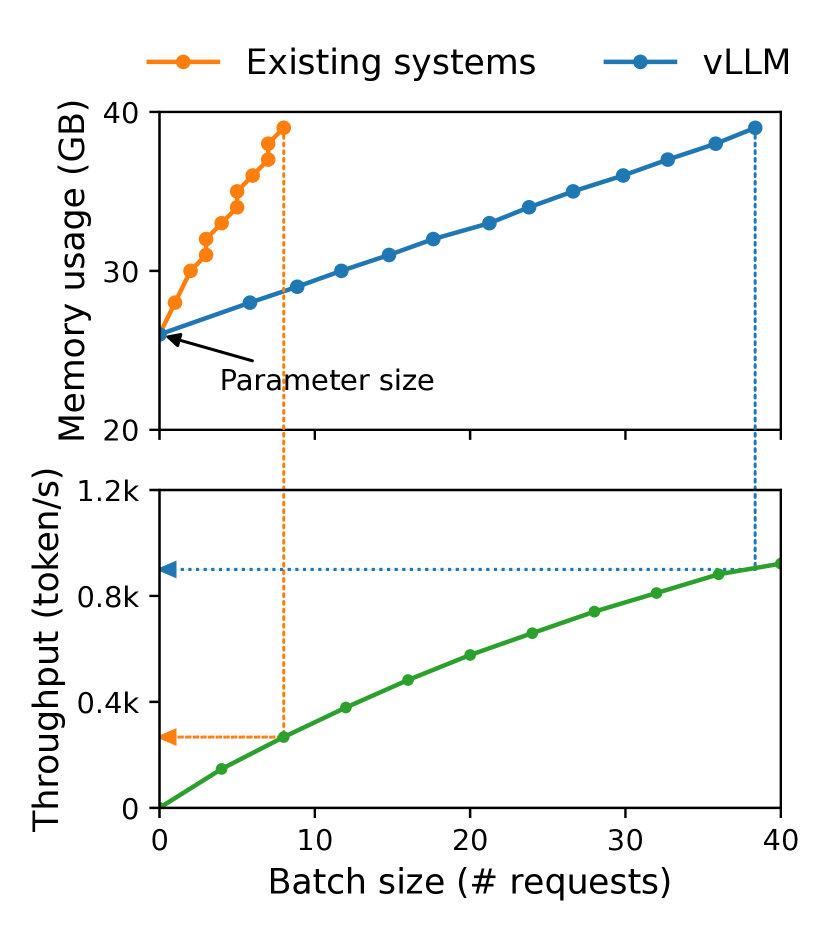
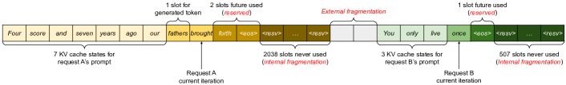

发展脉络
KV Cache 消除 decode 阶段重复 K/V 计算；PagedAttention 切块管理，prefix caching 与 disaggregation 将缓存变成可调度资源。
自回归生成每出一个 token，都要把前面所有 token 的 K 和 V 重算一遍——而它们明明一模一样。KV Cache 把这笔冤枉账省掉，但也带来了新的问题：当一篇长文写完，缓存占的显存比模型权重本身还大。怎么存、怎么管、怎么复用，就是这一节要解决的问题。
自回归生成分为两段：prefill 一次性算出整条 prompt 的 K/V 并存起来，decode 每次只算新 token 的 K/V 并追加进缓存，注意力只对缓存里的 K/V 做一次增量查询。省掉的是 $O(n^2)$ 逐 token 的重复重算。
回顾因果自注意力的两阶段特点：
关键发现：这 100 次前向里，前面 99% 的 K 和 V 从头到尾一模一样。第 $i$ 步生成的 $K_i$ 和 $V_i$，在第 $i+1$ 步、$i+2$ 步……直到结束都不会变。每次把它们全部重算一遍，是从 $O(n^2)$ 到 $O(n^2)$ 的通盘浪费。
现代推理引擎把一次生成请求拆成两个阶段处理，因为它们的计算特征完全不同：
| 维度 | Prefill | Decode |
|---|---|---|
| 输入 | 整条 prompt（可能几千 token） | 上一步生成的 1 个 token |
| 计算量 | 大矩阵乘，$O(n^2\cdot d)$ | 小矩阵乘 + 注意力查表，$O(n\cdot d)$ |
| 瓶颈 | 算力（Compute-bound） | 显存带宽（Memory-bound） |
| K/V 操作 | 为全部 prompt token 生成 K/V，写入 Cache | 只算新 token 的 K/V，追加到 Cache |
| GPU 利用率 | 高 | 极低（大矩阵乘变成了小量的向量-矩阵操作） |
| 一个直观类比 | GPU 在铲大口大口的数据 | GPU 在铲一小勺，但每勺都要把整个 KV Cache 在显存和计算单元之间搬一遍 |
这个二分法是理解后续一切部署优化的基础。Prefill 靠算力吃饱，Decode 受访存带宽。一篇接一篇的论文在优化 Decode，正是因为"一小勺数据把几十 GB 的显存全读一遍"这个矛盾太尖锐了。
写出来会更清楚为什么省了那么多。设已缓存的 K 和 V 为 $K_{1:t-1}$ 和 $V_{1:t-1}$，第 $t$ 步新 token 的向量为 $x_t$。
核心就在于第二行和第五行的区别：没有 KV Cache 时，$K_t$ 是一个 $t \times d_k$ 的矩阵，需要从 $x_{1:t}$ 全部重新投影得到；有了 KV Cache，新乘出来的只有最后一行 $x_t W^K$，前面的 $t-1$ 行直接引用缓存，一次矩阵乘都不用。单步计算量因此从 $O(t^2)$ 降到 $O(t)$。
这也解释了为什么 Decode 是 memory-bound：$Q_t$ 只有 1 行，矩阵乘变成了向量操作，不是算不动，是从显存把整份 KV Cache 读进计算单元的时间远超过计算本身——标准的"算等数据"。
先给公式，再用一个具体配置算出来，让读者有一个内化的数量级直觉。
逐项解释：
以 Llama-3-8B 为例（$N=32$，$H_{kv}=8$，$d_h=128$，BF16）：
| 配置 | 计算 | KV Cache |
|---|---|---|
| 单请求 4K 上下文（典型微调/早期部署） | $1 \times 4096 \times 32 \times 2 \times 8 \times 128 \times 2$ | ~0.5 GB |
| 单请求 32K 上下文 | 同上，$L$ 扩大 8× | ~4 GB |
| 单请求 128K 上下文 | $1 \times 131072 \times 32 \times 2 \times 8 \times 128 \times 2$ | ~16 GB |
| 8 并发 8K 上下文 | $B=8, L=8192$ | ~8 GB |
| 模型权重（对照） | $8\text{B} \times 2$ | ~16 GB |
一条 128K 的请求，KV Cache（16 GB）已经和模型权重本身（16 GB）一样大了。这还只是 Llama-3-8B，换成 70B 模型，权重 140 GB，KV Cache 按比例涨到上百 GB。而且这是 $H_{kv}=8$（GQA）的版本——如果换成同等规模的纯 MHA 模型（$H_{kv}=H_Q$），上面的数字要再乘以 4 到 8。
下图把这个"指数级膨胀"画出来：随着上下文从 4K 拉到 256K，单个 8B 级 GQA 请求的 KV Cache 从半 GB 涨到 32 GB 量级。一旦并发或多轮叠加，显存很快被吃满。
上面的公式里，唯一能被架构设计直接砍掉的因子是 $H_{kv}$——KV 头的数量。Query 头数 $H_q$ 决定模型有多少种"提问视角"，删掉它会实打实伤害表达能力；但 K 和 V 是"被查询的内容"，多个 Query 头共用同一份 K/V 未必损失那么大。这个观察催生了从 MHA 到 MQA 再到 GQA 的一整条演化路线。
先把三者的区别用一句话说清楚：MHA 是每个 Query 头配一套自己的 K/V；MQA 是所有 Query 头共用同一套 K/V；GQA 是把 Query 头分成若干组，每组内共用一套 K/V。换句话说，$H_{kv}$ 从 $H_q$ 一路降到 1，GQA 停在中间的某个值。以 $H_q = 32$、$d_h = 128$、$N = 32$ 层、BF16、单条 32K 序列为例，把三种配置代进公式算一遍：
| 方案 | $H_{kv}$ | 每 token 每层 KV 字节 | 32K 单请求 KV Cache | 相对 MHA |
|---|---|---|---|---|
| MHA | 32 | $2\times32\times128\times2 = 16384$ B | ≈ 16 GB | 1× |
| GQA-8（Llama-3 系列采用） | 8 | $2\times8\times128\times2 = 4096$ B | ≈ 4 GB | 1/4 |
| GQA-4 | 4 | 2048 B | ≈ 2 GB | 1/8 |
| MQA | 1 | 512 B | ≈ 0.5 GB | 1/32 |
这个倍数关系是完全线性的，没有任何隐藏成本——KV Cache 的大小与 $H_{kv}$ 严格成正比。所以 MQA 相对 MHA 直接省了 32 倍。听起来太美好了，代价在哪里？代价在质量：所有 Query 头共用一份 K/V，等于强迫 32 种不同的"提问视角"去查同一本索引，注意力头之间的多样性被压缩，在需要精细区分的任务上会出现可测量的退化，而且训练过程也更容易不稳定。GQA 之所以成为事实标准，正是因为它把"组内共享"的粒度调到了甜点区：分成 8 组时，每组 4 个 Query 头共用一套 K/V，质量损失小到基本可以忽略，KV 却只剩四分之一。
还有一个常被忽略的收益：Decode 阶段是 memory-bound 的，KV 变小意味着每一步要从显存搬运的字节数同比减少，吞吐几乎同比提升。换句话说 GQA 不只是"省显存让你能开更大 batch"，它本身就直接加快了单请求的生成速度。这是 GQA 比"上下文压缩"这类方案更受欢迎的根本原因——两头都赚。
MLA（Multi-head Latent Attention）走的是另一条路：不减少头数，而是把 K/V 压缩到一个低维潜在向量里缓存，用的时候再投影回去。缓存的是压缩表示，所以 KV Cache 可以比 GQA 更小，同时保留了每个头独立的 K/V 结构。它的代价是引入了额外的升维矩阵乘运算，以及与 RoPE 的兼容需要专门设计。三条路线的完整对比、参数量差异和设计动机，见 注意力变体全景。
传统 KV Cache 的朴素实现非常简单：每个请求预分配一整块连续的显存，大小按 $L_{max}$ 算好。这带来了一个严重的碎片化问题。
PagedAttention 的洞见直接把操作系统里"虚拟内存分页"那套搬了过来：

这张论文原图值得逐块读。左图是一台 A100（80 GB 显存）在服务一个 13B 模型时的显存快照：灰色的大块是模型权重，从头到尾一直占着；红色的是 KV Cache，随每个请求来分配、请求结束就释放；黄色是激活值，只有一小条。关键在于红色的形状——传统系统里，每个请求都要「提前预留」一整块 KV 空间（你最多可能生成多长，就预留多大），于是红色区块充满了被请求「占着但没用」的洞。右图则展示 vLLM 用分页管理后，KV Cache 的实际占用随请求数平滑增长，不像传统系统那样「跳台阶」——每多一个请求不是立刻分配一大块，而是按需一点点涨。这一左一右，就是 PagedAttention 要解决的「碎片化」问题的直观证据。
再看同一篇论文的 Figure 3，它把碎片化拆成了三种可量化的「浪费」，比「瑞士奶酪」这种比喻更精确：预留浪费（reserved）——请求按最大可能长度预留空间，实际没用到那么多；内部碎片（internal fragmentation）——分配单元里用不满的边角料；外部碎片（external fragmentation）——显存里零散的洞凑不出一个连续大块。PagedAttention 按固定大小的页分配，让后两种碎片只发生在「一页」的粒度上，外部碎片从「放不下整个请求」降级成「最多浪费半页」。这也是为什么把图 1 和图 3 放一起读，能一次看懂 vLLM 的价值。

新手读这张图时最容易忽略一个细节：图里「同一个 token 在不同位置，K/V 可能长得不一样」——图中特别标注了这一点。它的意思是，K/V 的内容和 token 所在的绝对位置相关（因为注意力带位置编码），所以不能天真地「按 token 去重 KV」，只能按「位置 + token」共享。这也解释了为什么前缀共享要求逐 token 完全匹配——任何位置偏移都会让 K/V 失去复用价值。
物理内存分成大小相等的页框（4 KB）。进程不需要一整块连续物理内存，页面分散在物理内存中，通过页表映射。
KV Cache 分成大小相等的页（如 16 或 32 个 token）。请求不需要一整块连续显存，KV 页面分散在显存中，通过页表映射成逻辑上连续的序列。
收益非常直接：
PagedAttention 是 vLLM 推理引擎的核心技术。今天几乎所有现代推理框架都采用了某种形式的分页 KV Cache 管理。注意这一层的优化只改内存管理策略，不改变注意力本身的计算结果——数学上仍然是精确注意力，只是存得更聪明。
分页管理的"共享"不止是省显存，还支撑了 beam search 这类需要多路并行的场景。设想 beam width = 4：4 条候选序列共享同一个 prompt 前缀，前缀的 KV 页自然只存一份。但当 4 条序列在某一位置开始分叉、各自要继续追加新 token 时，问题来了——如果它们继续往"同一页"里写，就会互相踩踏。
解决办法是写时复制（Copy-on-Write, CoW）：只要一个分支要修改/追加一个被多路共享的 KV 页，就先复制出一份专属副本，再在副本上写，原始页留给其他分支继续用。这样在分叉之前，所有 beam 完全共享 KV，零冗余；分叉之后，各自持有独立副本。RadixAttention（SGLang）也是用类似的引用计数 + CoW 机制来支持"前缀共享 + 任意分叉"。实现时要注意引用计数：一个页的引用数降到 0 才能真正回收。
选择一个页面的 token 数是一个需要权衡的工程决策。以 Tokens/Page 为例：
| 页大小 | 优点 | 缺点 |
|---|---|---|
| 1 token/page | 零浪费，完全弹性 | 页表条目数 = token 数，百 K 上下文对应百万级页表条目，寻址开销不可接受 |
| 16-32 token/page（常见） | 页表开销可控（数千条目），碎片率 ~3-5% | 平衡点，被 vLLM 和 SGLang 广泛采用 |
| 128+ token/page | 页表极简 | 碎片重新出现，短请求可能占不满一页，与预分配方案的差距缩小 |
实践中 16 或 32 是最常见的默认值，兼顾了管理开销和内存利用率。
下面这段约 30 行的 Python 把"页池 + 空闲分配 + 前缀匹配"三个核心动作串起来，用于建立直觉（生产实现当然要搬到 GPU 上并用 CUDA 核函数，但逻辑是一样的）：
class PagedKVCache: def __init__(self, page_size=16, max_pages=1024): self.page_size = page_size self.free_pages = list(range(max_pages)) # 空闲页号池 self.used = {} # req_id -> [page_id, ...] def allocate(self, req_id): if not self.free_pages: raise MemoryError("KV Cache 显存耗尽") pid = self.free_pages.pop() self.used.setdefault(req_id, []).append(pid) return pid def free(self, req_id): for pid in self.used.pop(req_id, []): self.free_pages.append(pid)def match_prefix(tree, tokens): # tree: 前缀树（Radix Tree）；返回可复用的前缀长度 node, shared = tree, 0 for t in tokens: children = node.get("children", {}) if t in children: node = children[t]; shared += 1 else: break return shared注意 match_prefix 只做"token 序列精确匹配"——这正呼应了后面 RadixAttention 的坑：前缀必须逐 token 完全相同才能共享。任何在 prompt 模板上的微小差异（多一个空格、不同的换行）都会让共享失效。
分页管理解决了碎片，但没有解决重复存储。一个典型场景：100 个用户同时向同一个 ChatBot 提问，每个请求都带一条 500 token 的 system prompt。朴素 KV Cache 下，这 500 token 的 K/V 要在显存里存 100 份，总共占用 $100 \times 500 \times \cdots$ 的显存——而它们每一个比特都一模一样。
RadixAttention 把"前缀共享"做成了数据结构：用一个基数树（Radix Tree）维护所有活跃请求的 KV Cache。树的一条边对应一段连续 token 的 KV 页面，从根到叶子的路径就是一条完整的 KV 序列。
当新请求到达时：
用一张时序图把"新请求如何命中/未命中前缀"讲清楚：
RadixAttention 是 SGLang 推理引擎的核心技术。它与 PagedAttention 搭配使用时，分页管理负责"怎么存"，基数树负责"存哪里、谁共享谁"，两者正交。
| 场景 | 共享内容 | 节省量级 |
|---|---|---|
| System prompt 复用 | 500-2000 token 的固定指令前缀 | 每并发请求省一份前缀 KV，常节省 30-50% 总 KV 显存 |
| Few-shot 示例 | 给模型的多个示例（同一套示例大量复用） | 示例越长越显著，典型省 20-40% |
| 多轮对话 | 整段历史对话（用户补了一句话，前面轮次都相同） | 后面的轮次几乎零新增 prefill，响应延迟显著降低 |
| 批量评测 | 同一份指令 + 不同测试用例 | 指令部分只存一份，评测吞吐大幅提升 |
公式里的六个因子，各自对应一类优化手段。$H_{kv}$ 交给架构（GQA/MLA），$B$ 和 $L$ 由业务决定不能随便动，$N$ 和 $d_h$ 是模型固有的——剩下能动的只有 $\text{dtype\_bytes}$，以及一个公式里没写出来的隐含假设：是不是每个 token 的 K/V 都必须留着。
模型权重量化已经是常规操作，KV Cache 同样可以量化。好消息是 KV Cache 对量化的容忍度通常比权重更高——它是"中间激活值"，误差不会像权重那样在每一层被反复放大。把 BF16 换成 FP8 直接省一半，换成 INT4 能省四分之三。
坏消息是 K 和 V 的数值分布很不一样。K 张量存在明显的"通道异常值"（outlier channel）：某几个特征维度的数值幅度会比其他维度大一两个数量级，如果用整条张量共享一个缩放因子做量化，这几个异常通道会把量程撑满，其余通道被压缩到只剩几个有效格点，精度直接崩掉。V 张量的分布则平缓得多。因此实践中的做法是非对称处理：K 按通道（per-channel）量化，V 按 token（per-token）量化，各自用自己的缩放因子。KIVI 等工作正是围绕这个观察展开的。
另一个工程细节是保留一个 FP16 的"滑动窗口"：最近几十个 token 的 K/V 不量化，因为它们对当前这一步的注意力权重影响最大，量化误差最敏感；更早的 token 才降精度存储。这种"近处高清、远处压缩"的分层策略，是量化方案里性价比最高的一招。
| 手段 | 压缩比 | 对质量的影响 | 主要代价 |
|---|---|---|---|
| FP8 KV | 2× | 基本无损，多数任务测不出差异 | 需要硬件支持 FP8（Hopper 及以后） |
| INT8 KV（分组缩放） | 2× | 轻微，长文任务需实测 | 量化/反量化的额外核函数开销 |
| INT4 KV（K 按通道 / V 按 token） | 4× | 短文可用，长文与推理任务上可能有可感知退化 | 实现复杂，需保留 FP16 近窗 |
| 驱逐 / 稀疏保留 | 2–10×（取决于保留率） | 取决于被丢弃的 token 是否真的不重要，最不可控 | 可能丢失关键信息，与前缀共享冲突 |
| 卸载到 CPU / NVMe | 不压缩，只是换地方放 | 无损 | PCIe 带宽成为新瓶颈，需与计算重叠 |
注意力矩阵有一个反复被观测到的性质：它非常稀疏。在一条几千 token 的序列里，大部分历史 token 对当前这一步的注意力权重接近于零。既然如此，为什么要为它们付显存？
StreamingLLM 给出了一个极简的答案：只保留开头的几个 token（"注意力汇聚点"，attention sink）加上最近的一个滑动窗口，中间的全部丢弃。这个方案之所以有效，关键在于那几个开头 token——研究者发现即使它们语义上毫无意义（比如就是一个 BOS 标记），模型也会把大量注意力"倾倒"在上面，本质上是 softmax 需要一个归一化出口。一旦把它们丢掉，softmax 的分布会剧烈畸变，生成质量立刻崩溃。保留它们，模型就能在固定大小的缓存上无限续写。
H2O 等工作则更"聪明"一些：按累积注意力得分动态选择要保留的 token，历史上被反复关注的"重击者"（Heavy Hitter）留下，长期无人问津的淘汰。质量比固定窗口更好，但需要维护统计信息，且实现上与分页管理、前缀共享的配合更复杂。
把前面所有机制串起来，看一个请求从进队列到释放显存经历了什么状态。这个状态机是理解推理引擎调度逻辑的地图：
其中最容易被忽视的是 Preempted（抢占） 这条边。当高优先级请求进来而显存不够时，引擎必须腾地方，有两种做法：换出（swap）——把 KV 页搬到 CPU 内存，之后再搬回来，代价是 PCIe 传输时间；重算（recompute）——直接扔掉，等重新调度时重跑一遍 prefill，代价是算力。哪种更划算取决于序列长度和硬件：短序列重算更快（prefill 是算力密集但绝对时间短），长序列换出更划算（重算 32K 的 prefill 比搬 4 GB 数据慢得多）。生产引擎通常按长度阈值自动选择。
另一个细节：Decoding → Decoding 这条自环意味着每生成 16 个 token（一个页大小）就要向分配器申请一次新页。如果此时页池已空，请求就会被迫进入 Preempted。所以推理引擎在接纳新请求时会做准入控制：预估这个请求可能生成的长度，确认页池还有余量才放进来，否则宁可让它在 Waiting 里多等一会儿——先放进来再抢占，比一开始就不放进来的总代价更高。
KV Cache 相关的优化在过去两年爆炸式增长，容易看得眼花。按"动了公式里的哪个因子"来归类，其实非常清晰：
这五类是正交的，可以叠加使用。一个典型的生产配置是：GQA-8 架构（4×）+ FP8 KV 量化（2×）+ PagedAttention（利用率从 40% 到 90%）+ 前缀共享（多轮对话省 30%+）+ 长序列卸载兜底。相对最朴素的 MHA + BF16 + 预分配实现，综合能把同样显存下的并发数提升一到两个数量级。这也是为什么"同一个模型，不同引擎跑出来的吞吐能差好几倍"——差的就是这些叠加起来的工程细节。
做个粗算就明白了。Decode 每一步，对某一层的注意力而言，需要从显存读入的数据量约等于该层的 KV Cache 大小，而计算量约等于 $Q_t$（1 行）与 $K_{1:t}$（$t$ 行）的一次向量-矩阵乘，即 $O(t \times d)$ 次乘加。读入的字节数和计算的次数几乎是同一个量级——每读入一个 KV 元素只做常数次运算。
这个比值叫算术强度（arithmetic intensity，FLOPs per byte）。现代 GPU 的算力与带宽之比通常在每字节数百次浮点运算的量级，也就是说：想要喂饱算力单元，每从显存搬一个字节就得做几百次运算。而 Decode 只做了个位数次。结论是算力单元有 99% 的时间在等数据，算力利用率落到个位数百分比毫不意外。
这个分析直接推出了三条优化方向：（1）减少要搬的字节——GQA、量化、驱逐都属于此类，效果最直接；（2）增加每次搬运的复用次数——连续批处理（continuous batching）把多个请求的 $Q$ 拼成一个矩阵，同一份权重搬一次给 $B$ 个请求用，算术强度提升 $B$ 倍，这是提升吞吐最有效的手段；（3）一次搬运多算几步——投机解码让小模型先猜若干 token，大模型一次性验证，把 $B=1$ 的向量操作变成小批矩阵操作，见 投机解码。理解了算术强度，这三条路线就不再是零散的技巧，而是同一个物理约束的三种绕法。
标准回答：历史 token 在后续步骤中的 Key 和 Value 不会改变，因此可以把每层的历史 K/V 保存下来。Decode 时只为新 token 计算 Q、K、V，把新 K/V 追加到缓存，当前 Query 再与缓存中的全部 K 做注意力，避免重复投影历史 token。
常见误区：KV Cache 不是把整个 Transformer 的中间结果都缓存，也不是缓存最终 logits；它主要缓存每层注意力使用的 K 和 V。
标准回答：Prefill 一次处理整段 prompt，矩阵规模大、并行度高，通常更偏 compute-bound；Decode 每次只生成一个 token，计算矩阵很小，却要反复读取越来越大的 KV Cache 和模型权重，通常更偏 memory-bound。
Prefill 更适合通过大 batch、Tensor Core 和 FlashAttention 提高算力利用率；Decode 则更关心 KV Cache 字节数、显存带宽、GQA/MQA、PagedAttention、连续批处理和请求调度。把两阶段混用同一套指标，容易误判优化是否有效。
标准回答：KV Cache 显存与 KV 头数 $H_{kv}$ 成正比。MHA 中每个 Query 头有独立 K/V；MQA 让所有 Query 头共享一组 K/V；GQA 则按组共享。因此 GQA/MQA 可以减少缓存大小和 Decode 的访存量，但共享粒度过激可能带来质量退化。
kv_bytes = B * L * N * 2 * H_kv * d_h * dtype_bytes面试追问：GQA 减少的是 $H_{kv}$，不是 Query 头数；Query 头仍然保留多种表示和查询视角。
标准回答：它主要优化存储管理，不直接改变每个 K/V 元素的字节数。PagedAttention 把逻辑缓存切成固定大小的页，按需分配，通过页表映射到物理显存，从而减少预留浪费和碎片，提高并发服务的显存利用率。
常见误区：“分页”不等于“量化”。如果要减少单个元素的存储大小，应使用 FP8、INT8 等 KV 量化；分页解决的是分配和复用问题。
本章关注 Transformer 之后的架构选择：稀疏专家、线性/状态空间模型、长上下文、多模态和扩散语言模型。重点是理解每种方法改变了哪一层约束。
阅读提示：比较新架构时同时看训练目标、权重兼容性、推理状态和硬件实现；只看理论复杂度很容易得出错误结论。
MoE 路由、容量因子和负载均衡的经典介绍，适合建立稀疏激活的共同语言。
选择性状态空间模型的代表作，解释线性扫描、选择机制和长序列效率之间的关系。
用较少 KV 头降低推理带宽和缓存开销，是理解 MQA/GQA 工程取舍的直接来源。
ViT 将图像 patch 化并交给 Transformer，帮助理解多模态视觉编码器的基本范式。
以 LLaDA 为代表的扩散语言模型工作，适合和自回归模型对照并识别当前研究边界。
资料优先选用原始论文、官方文档、大学课程和公共机构材料；链接按 2026-08-10 检索，具体版本以来源页面为准。
KV Cache 消除 decode 阶段重复 K/V 计算；PagedAttention 切块管理，prefix caching 与 disaggregation 将缓存变成可调度资源。
缓存显存约为 2*layers*tokens*kv_heads*head_dim*bytes；GQA/MQA 通过减少 kv_heads 降低占用。
共享缓存提高吞吐却引入匹配、租户隔离和失效策略；offload 节省显存但把瓶颈移到 PCIe/NVLink。
RadixAttention、KV 量化、选择性缓存和 Prefill/Decode 分离正在优化长上下文服务，需同时报告 TTFT、TPOT 和尾延迟。